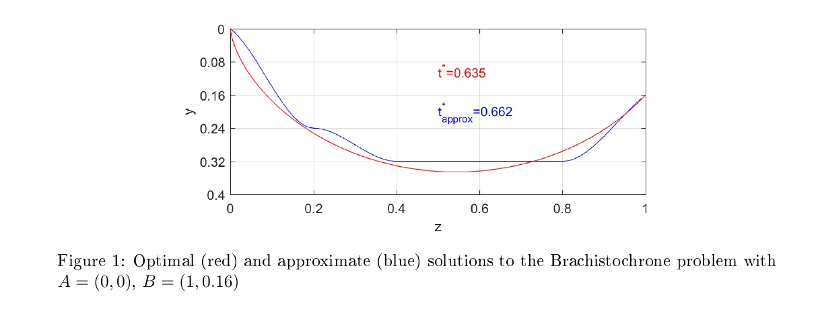

import numpy as np
import matplotlib.pyplot as plt
import scipy.integrate as integrateThe Brachistochrone Problem
The brachistochrone problem was proposed by Johann Bernoulli in 1696 and can be solved using optimal control arguments (Pontryagin’s maximum principle). The problem consists of finding a curve connecting two points \(A = (0, 0)\) and \(B = (z_B , y_B )\), \(z_B > 0\), \(y_B > 0\), on a vertical plane \((z, y)\) such that a particle starting from \(A\) and sliding without friction along this curve reaches \(B\) in minimum time. The y-axis is aligned with gravity. The optimal solution is given by
\[(y, z) = c(\theta - \sin(\theta ), 1 - \cos(\theta )),\, \theta \, \in \, [0, \overline\theta ̄]\]
where \(c\) and \(\overline{\theta}\) can be picked such that \(y(\overline{\theta})\), \(z(\overline{\theta})\) \(= (y_B ,\, z_B)\). This optimal solution is shown in the red line in Figure 1 for given parameters. The goal of this assignment is to find an approximate solution (such as the one shown in blue in Figure 1) using a discretization approach and applying dynamic programming. The considered curves, denoted by \(p(z)\), are continuously diferentiable cubic splines, obtained by concatenating third order polynomials, denoted by \(p_k(z)\), defined in segments \(z \in [z_k ,\, z_{k+1}]\), \(z_k =k\frac{ z_B}{h}\) , \(k \in \{0, 1, . . . , h - 1\}\), \(z_h = z_B\) and imposing that \(p(z_k)\) and \(p{\prime}(z_k)\) belong to finite sets. These curves can then be specifed by \(p(z) \in C\) , where \(\mathcal{C}:=\left\{p_{0}(z) \mathbf{1}_{\left[z_{0}, z_{1}\right]}+\sum_{k=1}^{h-1} p_{k}(z) \mathbf{1}_{\left(z_{k}, z_{k+1}(z)\right.} |R_1,R_2,R_3, R_4 \text{ hold }\}\right.\)
where
\[ R_1 \rightarrow p_{k}(z)=a_{k}+b_{k}\left(z-z_{k}\right)+c_{k}\left(z-z_{k}\right)^{2}+d_{k}\left(z-z_{k}\right)^{3}\]
\[R_2 \rightarrow p_{0}(0)=0, p_{h-1}\left(z_{B}\right)=y_{B} \]
\[R_3 \rightarrow p_{k}\left(z_{k+1}\right)=p_{k+1}\left(z_{k+1}\right), p_{k}^{\prime}\left(z_{k+1}\right)=p_{k+1}^{\prime}\left(z_{k+1}\right) \]
\[R_4 \rightarrow p_{k}\left(z_{k}\right) \in\left\{\ell \frac{\bar{y}}{L} | \ell \in \mathcal{L}\right\}, p_{k}^{\prime}\left(z_{k}\right) \in\left\{\tan \left(\frac{\pi}{2(R+1)} r\right) | r \in \mathcal{R}\right\}\]
and \(\mathcal{L}:=\{0,1,...,L\}\), \(\mathcal{R}:=\{-R, -R + 1, . . . , -1, 0, 1, . . . R\}\), for a given \(\overline{y}\, >\, y_B\, ;\, 1_{[a,b]}(z)\)equals one if \(z\, \in [a,b]\)and zero otherwise. It is convenient to define \(\mathcal{n}:=\, (2R+1)(L+1)\) \(\mathbb{L}\) and the map \(\mathcal{X}:\, \mathcal{L} \, x\, \mathcal{R}\, \rightarrow \, \{1,2,...n\}\, .\, (l,r)\, \rightarrow \, 1+R+r+l(2R+1)\). Denoting \(m\), \(\upsilon\) and \(g\), the mass, velocity and gravity constant, respectively, using the Conservation of Energy Principle we obtain
\[\frac{1}{2}m\upsilon ^2\, =\, mgy\, , \quad g=9.81\]
so that the velocity is a function of \(y\), as it is shown below
\[\upsilon \, = \, \sqrt{2gy}\]

The time it takes for the ball to move from a point \(C = (z_C , y(z_C))\) to a point \(D = (z_D , y(z_D ))\), along a curve \(y(z)\) is then
\[t(z_C,\, z_D,\, y)\, = \, \int _{z_C}^{z_D}\, \frac{\sqrt{1+(y{\prime})^2}}{\upsilon (y(z))} dz\]
This live script finds the optimal solution \(p\) to the problem stated above, which can now be stated as follows.
\[\min\, t(0,z_B,p), \quad p \, \in\, C\]
In order to find such a solution the problem is broken down in four tasks corresponding to each of the following functions.
- The function
u, J = dp(M,C,Jh,h), which solves a discrete optimization problem of the following form
\[\min\, \sum _{k=0}^{h-1}\, g(xk,u_k)\, +\, g_h(x_h)\]
\[ \text{subject to } x_{k+1}\, =\, f(x_k,u_k)\]
where \(k\,\in\, K\,\,\, :\, = \,\, \{1,2,...,h-1\}\), \(x_k\,\, \in \,\, X\,\,\, :\, =\,\{1,2,...,n\}\), for $ k , , K {h}$ and \(u_k\,\, \in \,\, U_K\,\,\, :\, =\,\{1,2,...,m\}\) for $ k , , K$.
The inputs of the function are:
The \(n\, x\, m\) M matrix such that \(M(i,j)\, = \, f(i,j)\);
The \(n\, x\, m\) C matrix such that \(C(i,j)\, = \, g(i,j)\);
The \(J_h\) vector such that \(J_h(i)\, = \, g_h(i)\), \(i\in \, X_h\);
The number of stages \(h\).
Τhe output arguments are:
\(J - n \, \times\, h\) matrix such that \(J(i, k + 1)\) is the costs-to-go at stage \(k,\, k \, \in \, K \cup \{h\}\), and state \(i\);
\(u - n \, \times \, h\) matrix such that \(u(i, k + 1)\) is the optimal action with the smallest index \(j\) (in case there are more than one optimal actions) for each stage \(k,\, k \, \in \, K\), and state \(i\).
- The function
M, C, Jh = formulatebrachistochronedp(yB,zB,L,R,h,ybar), which provides the matrices \(M\), \(C\), and \(J_h\), as given above, of the dynamic programming problem specified by \(x_k = \mathcal{X}(i,j)\, \in\, \{1,2,...,n\}\), if \(p(z_k) = i_k\frac{\overline {y}}{L}\), and \(p{\prime}(z_k) = \tan ({\frac{\pi}{2(R+1)}j_k})\), the dyamic model
\[f(x_k,u_k)=u_k,\]
the cost function
\[g(x_k,u_k)\, = \, t(z_k,\, z_{k+1}, p_3)\]
where \(p_3\) is the unique \(3rd\) order polynomial such that
\(p_3(z_k) = i_k\frac{\overline {y}}{L}\), \(p_3{\prime}(z_k) = \tan ({\frac{\pi}{2(R+1)}j_k})\), \((i_k,\, j_k)\,\, =\,\, \mathcal{X}^{-1}(x_k)\)
\(p_3(z_{k+1}) = i_{k+1}\frac{\overline {y}}{L}\), \(p_3{\prime}(z_{k+1}) = \tan ({\frac{\pi}{2(R+1)}j_{k+1}})\), \((i_{k+1},\, j_{k+1})\,\, =\,\, \mathcal{X}^{-1}(u_k)\)
and the terminal cost
\[ J_h(x)= \left\{\begin{array}{ll} 0, & if \, \mathcal{X} ^{-1}(x)\, = \, (i,\, b)\quad \text{and} \quad y_B=i\frac{\overline{y}}{L}\quad for\, some\, b\\ \infty ,& otherwise \\\end{array} \right. \]
for the input parameters \(y_B, \,\, z_B, \,\, L,\,\, R, \,\, h,\,\, \overline{y}\). This function in order to work requires another function timepoly3int which is desribed below.
- The function
[t,coef] = timepoly3int(z0,y0,dy0,z1,y1,dy1)is an auxiliary function (used informulatebrachistochronedp,getoptimalpath), providing the coeficients coef=[a b c d] of the unique polynomial
\[p_3(z)\, =\, a+b(z-z_0)+c(z-z_0)^2+d(z-z_0)^3\]
such that the following holds
\[p_3(z_0)\quad = \quad y_0 , \quad \overline{p}_3 (z_0)\, =\,\, dy_0\]
\[p_3(z_1)\quad = \quad y_1 , \quad \overline{p}_3 (z_1)\, =\,\, dy_1\]
and the time \(t\) taken for the ball to move from point \((z_0, y_0)\) to point \((z_1, y_1)\) along this path.
- Finally, the function
zplot, yplot, toptapprox = getoptimalpath(u,J,yB,zB,L,R,P,ybar)outputs \(P + 1\) evenly spaced points ( \(\overline{z}_k = k\frac{z_B}{L}\), \(k\,\, \in \,\, \{0,1,...,P\}\)), of the optimal solution p to the problem (2), where \(\text{zplot} = [\overline{z}_0,\,\, \overline{z}_1,\,\,\overline{z}_2,,,,\,\,\overline{z}_P]\),\(\text{yplot} = [p(\overline{z}_0),\,\, p(\overline{z}_1),\,\, p(\overline{z}_2),,,,\,\, p(\overline{z}_P)]\), based on the output of the dynamic programming algorithm \(u\), \(J\) and the input parameters as defined above. Moreover, it also output toptapprox, which is the optimal value of the solution to the problem (2) (time to travel from A to B).
These functions are combined in the following script which provides the desired optimal solution.
def timepoly3int(x0, y0, dy0, x1, y1, dy1):
a = y0
b = dy0
dx = x1 - x0
cd = np.array([[3 / dx ** 2, - 1 / dx], [-2 / dx ** 3, 1 / dx ** 2]]) @ \
np.array([[y1 - y0 - dy0 * dx], [dy1 - dy0]])
c = cd[0, 0]
d = cd[1, 0]
w_ = x0 + np.concatenate([np.arange(0.0001, 0.0011, 0.0001), np.arange(1, 100, 1) / 100]) * (x1 - x0)
vx = np.sqrt(2 * 9.81 * y0) / (1 + dy0 ** 2)
if np.all(a + b * (w_ - x0) + c * (w_ - x0) ** 2 + d * (w_ - x0) ** 3 > 0): # and c > 9.81 / (2 * vx ** 2))
f = lambda w: np.sqrt(1 + (b + 2 * c * w + 3 * d * w ** 2) ** 2) / \
np.sqrt(2 * 9.81 * (a + b * w + c * w ** 2 + d * w ** 3)) # w = x1-x0
t = integrate.quad(f, 1e-6, dx - 1e-6)[0]
else:
t = np.inf
coef = [a, b, c, d]
return t, coefdef formulatebrachistochronedp(y, z, L, R, h, Y):
deltaz = z / h
deltay = Y / L
yvec = np.arange(0, L + 1, 1) * deltay
iy = np.argmin(abs(yvec - y))
thetavec = np.pi / 2 * np.arange(-R, R + 1, 1) / (R + 1)
R2 = (2 * R + 1)
C = np.zeros([(L + 1) * R2, (L + 1) * R2])
M = np.zeros([(L + 1) * R2, (L + 1) * R2])
indT = 1
for indy in range(0, L + 1):
for indtheta in range(0, R2):
for induy in range(0, L + 1):
for indutheta in range(0, R2):
output = timepoly3int(0, yvec[indy], np.tan(
thetavec[indtheta]), deltaz, yvec[induy], np.tan(thetavec[indutheta]))[0]
C[indy * R2 + indtheta, induy * R2 + indutheta] = output
M[indy * R2 + indtheta, induy * R2 + indutheta] = induy * R2 + indutheta + 1
indT = indT + 1
Jh = np.inf * np.ones([(L + 1) * R2, 1])
Jh[range(1 + iy * R2 - 1, (iy + 1) * R2)] = 0
return M, C, Jhdef dp(M, C, Jh, h):
n = M.shape # state and input dimension
J = Jh[:, 0]
J_ = np.zeros([n[0], h])
u_ = np.zeros([n[0], h])
ind = np.arange(0, n[1]) + 1
for k in range(h - 1, -1, -1):
for i in range(0, n[0]):
M.astype(int)
J_[i, k] = np.min(C[i, :] + J[M[i, :].astype(int) - 1])
c = ind[J_[i, k] == (C[i, :] + J[M[i, :].astype(int) - 1])]
u_[i, k] = c[0]
J = J_[:, k]
return u_, J_def getoptimalpath(u, J, y, z, L, R, P, Y):
h = u.shape[1]
deltaz = z / h
deltay = Y / L
yvec = np.arange(0, L) * deltay
R2 = 2 * R + 1
thetavec = np.pi / 2 * np.arange(-R, R + 1, 1) / (R + 1)
topt = np.min(J[range(0, R2), 0])
ind0 = np.argmin(J[range(0, R2), 0]) + 1
optind = np.zeros([h + 1])
opttheta = np.zeros([h + 1])
opty = np.zeros([h + 1])
optind[0] = ind0
opttheta[0] = thetavec[((optind[0] - 1) % R2).astype(int)]
opty[0] = yvec[np.ceil((optind[0] / R2) - 1).astype(int)]
for k in range(0, h):
optind[k + 1] = u[(optind[k] - 1).astype(int), k]
opttheta[k + 1] = thetavec[((optind[k + 1] - 1) % R2).astype(int)]
opty[k + 1] = yvec[(np.ceil(optind[k + 1] / R2) - 1).astype(int)]
P_ = P / h
w_ = np.arange(0, P_ - 1 + 1) / P_ * deltaz
zplot = []
yplot = []
for k in range(0, h):
[t, coef] = timepoly3int((k - 1) * deltaz, opty[k], opttheta[k], k * deltaz, opty[k + 1], opttheta[k + 1])
a = coef[0]
b = coef[1]
c = coef[2]
d = coef[3]
yplot = np.append(yplot, a + b * w_ + c * w_ ** 2 + d * w_ ** 3)
zplot = np.append(zplot, k * deltaz + w_)
zplot = np.append(zplot, z)
yplot = np.append(yplot, y)
return zplot, yplot, toptyB = 0.16
zB = 1
L = 5
R = 1
h = 5
P = 20
ybar = 0.4
M, C, Jh = formulatebrachistochronedp(yB, zB, L, R, h, ybar)
u, J = dp(M, C, Jh, h)
zplot, yplot, toptapprox = getoptimalpath(u, J, yB, zB, L, R, P, ybar)
plt.plot(zplot, yplot)
plt.gca().invert_yaxis()